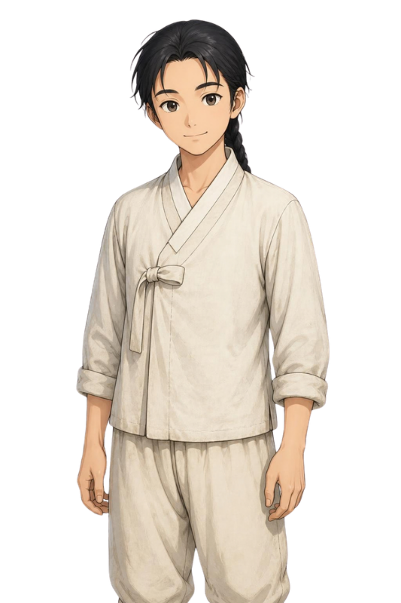

「조선에서 한 해 살기」 — 미연시 구도 시안
배경과 인물은 캔바 그림 생성으로 만든 시안입니다(2026-10-08). 대화창·이름표·선택지·위쪽 띠는 코드로 그렸습니다.
문장과 수치는 구도를 보이기 위한 예시이고, 실제 장면은 기획서를 따릅니다.
① 대화 장면 — 만난 사람이 서 있고, 아래 대화창에 말이 나온다(눌러서 넘김)

←
1395년 봄 · 느티골
살림4
기력6
인심5
이웃집 동무
들었어? 임금님이 도읍을 한양으로 옮기셨대.
궁궐도 새로 짓는다더라.
▼
② 선택 장면 — 선택지가 배경 위에 뜨고, 고를 수 없는 것은 까닭과 함께 보인다
←
1395년 봄 · 느티골
살림4
기력1
인심5
한양 이야기를 더 묻는다
논에 나갈 채비를 한다
🔒 이웃 마을까지 다녀온다기력이 모자라 오늘은 갈 수 없어요.
동무의 말에 귀가 솔깃하다. 하지만 오늘 할 일도 많다. 어떻게 할까?